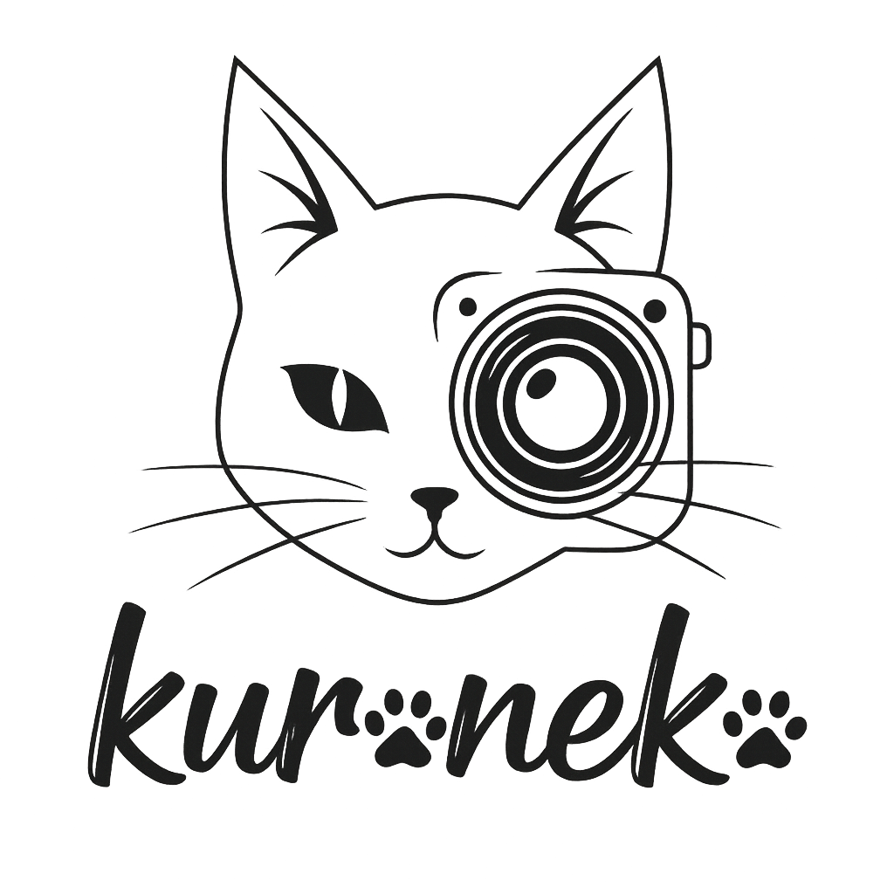

Retrato de personaje
Fotos enfocadas en actitud, pose, vestuario y presencia del cosplay.
- Idea visual conversada previamente
- Direccion simple de pose y encuadre
- Entrega de imagenes finales editadas

Kuroneko Nyx InstagramCosplay photography / Creative collabs
Kuroneko Nyx es un espacio amateur de fotografia cosplay: colaboraciones creativas, ideas compartidas, edicion cuidada y retratos pensados para construir portafolio y contenido artistico en redes.
No trabajo como estudio profesional ni ofrezco paquetes de pago. Me interesa crear con cosplayers que quieran aportar ideas, personajes y energia para construir imagenes utiles para ambas partes. Puedo apoyar con concepto, pose, encuadre y edicion, siempre desde la practica, el aprendizaje y el gusto por el cosplay.
Una seleccion visual para mostrar personajes, vestuario, expresion y pequenos momentos que nacen de cada colaboracion.
La idea es crear material visual para portafolio, redes y aprendizaje compartido. Puedo asistir a eventos como punto de encuentro o contexto, pero no realizo cobertura formal del evento.
Fotos enfocadas en actitud, pose, vestuario y presencia del cosplay.
Colaboraciones con una mini narrativa, mood o estetica definida entre ambas partes.
Sesiones breves aprovechando convenciones o espacios donde coincidamos.
Me escribes con personaje, idea, ciudad, fecha tentativa y referencias visuales si las tienes.
Revisamos expectativas, uso de imagenes, creditos, limites de edicion y condiciones de publicacion.
Buscamos buenas poses, detalles y encuadres con los recursos disponibles en ese momento.
Comparto versiones finales editadas. Esas son las imagenes que pueden publicarse con credito.
Esta es una version resumida y estructurada del acuerdo general de colaboracion fotografica. Sirve para que cualquier persona pueda revisar los puntos importantes antes de proponer una sesion.
Las sesiones colaborativas son artisticas y no remuneradas. Las fotos se crean para portafolio, difusion artistica y redes sociales. Participar implica aceptar las condiciones acordadas.
La colaboracion tiene caracter artistico y no remunerado. No constituye relacion laboral, sociedad ni contrato comercial. Su finalidad es crear material visual para portafolio, redes y difusion artistica.
Kuroneko.nyx conserva la autoria y propiedad intelectual de las fotografias. Tambien mantiene sus derechos morales, incluyendo reconocimiento como autor y respeto a la integridad de la obra.
La persona colaboradora autoriza el uso de las imagenes en portafolio, redes, exhibiciones artisticas y material promocional personal. Toda publicacion debe ser consensuada y puede retirarse si incumple el acuerdo.
La persona colaboradora puede publicar las versiones finales entregadas, respetando la integridad de la fotografia y acreditando adecuadamente a Kuroneko.nyx.
No se permite aplicar filtros, recortar, alterar colores o composicion, eliminar creditos, comercializar, ceder a terceros, usar en campanas publicitarias o presentar las imagenes como propias.
La edicion corresponde a Kuroneko.nyx. Puede incluir color, iluminacion, limpieza de elementos distractores e imperfecciones temporales. No se realizan modificaciones corporales estructurales que alteren sustancialmente la identidad fisica.
No se permite usar las fotografias para entrenamiento de modelos de IA, generacion de imagenes derivadas, manipulacion automatizada o sistemas de recreacion digital sin consentimiento escrito.
Cualquier cesion de derechos patrimoniales requiere acuerdo escrito adicional, alcance definido y compensacion si corresponde. Si una publicacion incumple el acuerdo, se podra solicitar su retiro.
Envia un DM con el personaje, ciudad, fecha tentativa, referencias y que tipo de fotos imaginas. Tambien podemos revisar si el concepto encaja con el acuerdo colaborativo antes de coordinar.